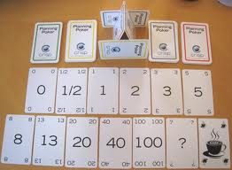
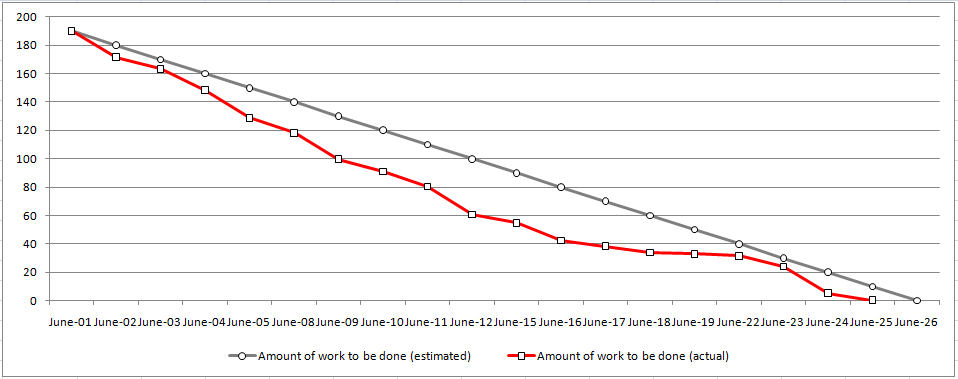

SCRUM Points and Velocity
Mark Kampe
Introduction
We can break up a large project into many milestones. But all project
milestones do not represent equal amounts of work. How can we translate
milestones into linear measures of our progress towards completion?
Earned Value Analysis attempts to associate dollar values
(a fraction of the entire project value) with milestones,
and so enable the achievement of milestones to be directly translated into
quantified progress. The Earned Value can be tracked over time to ascertain how well
we are doing vs. plan.
But Earned Value Analysis allows value to be earned for plans, approvals,
and intermediate deliverables. This makes it possible for a project to claim
to have made significant progress without ever actually delivering any working
software ... or for a project to appear to be on schedule despite the fact that
it is not actually building any working software at all.
The agile revolution is a response to a wide range non-constructive processes
that have arrisen in large software projects. One key declaration in the agile
manifesto states that "working software is more important than
comprehensive documentation." In large projects and large organizations, people
are often goaled, not on the creation of software, but on the creation of "process"
documents (e.g. schedules, plans, and design notes). Process is good
when it enables us to do a better job, but process compliance should never be
allowed to become an end in itself. If we goal people on process deliverables,
rather working software we create incentives for them to satisfy those goals
in ways other than creating working software.
To address this problem, agile methods declare the only valid measure of
progress to be delivered functionality,
SCRUM Points
Agile methods have a notion of story points, which are a measure
of the enhanced product value (to customers) that will be created by enabling
a particular story. Product owners use these scores to decide which features
should be implemented, and an in which order. Story points are a measure of
benefit. We also need a measure of cost. Dollars are the most obvious unit
for cost, but the estimation will be done by programmers, who find it difficult
to think of work in dollars. The most natural way for a programmer to think of
work is in hours or days. There are few reasons why those estimates might
prove to be incorrect:
- The programmers do not understand the functionality to be implemented.
The SCRUM backlog grooming process is supposed to ensure that all stories
at the top of the backlog are clear. An unclear story is not ready to be
considered for the next sprint.
- The programmers do not understand how the work is to be done.
One of the most important activities in the SCRUM sprint planning process
is a discussion (among the entire team) of exactly how each new story
will be implemented.
- The task is too large and complex to be accurately estimated.
The SCRUM backlog grooming process is supposed to break each story down
into pieces that are small enough to be done by a few people in a
few days. A task that is too large to be estimated is not ready to
be considered for the next sprint.
- The programmers could not accurately predict the difficulty of that work.
There will always be such inaccuracies, but over time:
- over- and under-estimates will average out.
- we can learn to calibrate estimates vs. actual time.
- The programmers could not predict what other interruptions would
distract them from that work.
This is a very significant unknown, but we do not ask programmers to
estimate when a task will be done. We only ask them to estimate how
many hours/days of uninterrupted work it will take.
In the SCRUM sprint planning process, the team discusses each feature and how
it will be implemented. After there is agreement on how the job will be done,
each member of the team estimates the required work:
- the estimation units vary from team to team, but common units are
ideal hours, ideal half-days, or ideal-days.
- estimates are often required to be Fibonacci numbers, which
eliminates meaningless precision (e.g. the difference between
20 hours and 21 hours).
- the estimations are often done with decks of "Planning Poker" cards,
where all team members throw down their estimates simultaneously.
This is to prevent people from changing their estimates to agree
with someone they might view as better informed.
- widely varying estimates can be discussed, or resolved through
simple voting algorithms (e.g. second highest number).

A typical "Planning Poker" deck
The chosen number becomes the SCRUM point value of this task. These points will
only be earned when the product owner accepts the implementation (and test cases)
as satisfying the requirements of the story. Note, however, that even though
the assigned points were based on an estimated number of hours (or days),
we will never discuss a task in terms of hours (or days).
Describing something as a four-hour task creates the expectation that
it will be done four hours hence ... and such assumptions are seldom correct.
To prevent such misunderstanding, we only talk about tasks in terms of points.
SCRUM Velocity
At the end of each sprint, we can add up the number of points that the team
earned (the values of the stories accepted as completed by the product owner).
This yields a velocity (in points per sprint). This velocity is not expected
to agree with the original basis for the estimates. It has been corrected
for:
- mis-estimation of difficulty
- time spent reviewing issues and solutions with other team members
- time spent on other activities (e.g. refactoring, backlog grooming,
bug fixing, helping others, ...)
Over time, if the same team is doing the same type of work, their velocity will
average out to approach a constant value.
We will call this long term average value the team's sprint velocity.
This velocity can be used to:
- estimate how much work the team can accept for the next sprint.
- measure changes in the team's productivity over time.
Note that points are only earned for implemented user stories, accepted
by the product owner. There are no points awarded for:
- prototypes
- designs
- plans
- backlog grooming
- bug fixes
- cleanups and refactoring
- training
This might seem unfair, as these are all very important activities.
SCRUM agrees that these are vital activities ... but they do not
directly deliver new user stories. These are all viewed as
overhead activities: parts of the cost of implementing the
software that earns points. Is there a danger that a team would
cut back on these activities to obtain short-term velocity improvements.
Perhaps, but over the medium-to-long term these activities should result
in better velocity. New tools, and techniques should improve our productivity.
Improved designs and implementation should reduce the amount of time we
spend working on bugs. Don't follow best practices because they are best
practices. Follow them because they make a difference.
Progress Tracking
Large project people might complain that only awarding points upon acceptance
of functionality by the product owner does not enable the fine-grained tracking
required for early problem detection. Note, however, that SCRUM requires that
functionality be delivered in stories that are simple enough to be implemented
by a few people in a few days. A typical team will complete 5-10 stories per
week ... which should enable very fine grained progress tracking.
The SCRUM equivalent of an earned value graph is called a
burn down chart. It plots the number of points earned
to-date against vs. date (days into sprint).
A constant velocity burn-down rate is generally plotted on the same
axes to enable the assessment of progress vs expectations.

As we progress towards the completion of all of the stories we want to
include in a particular release, the backlog gets drained, the remaining
tasks in the backlog become more clearly defined, and the estimates more
credible. If we can associate ranges (likely maximum and minimum points),
rather than T-shirt sizes, with tasks, we can, at any time, use the team's
sprint velocity to project an envelope for the expected completion date of
the remaining tasks in the backlog. Such projections have several advantages
over "big plan up front" estimates:
- the uncertainty is explicit and quantified
- the convergence (or divergence) over time is easily measured
- the product owner can compute this date and does not need to
ask developers when they expect the work will be done
- the product owner can directly observe the time/functionality
trade-off and make content decisions accordingly